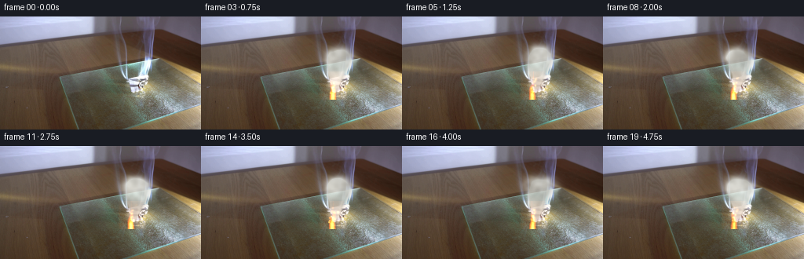
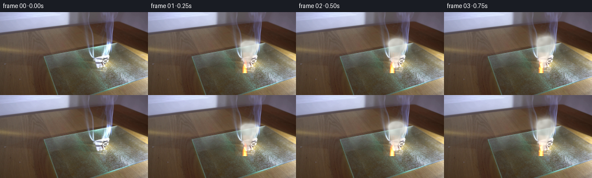

CODING AGENTS AS PIXEL WORLD MODELS
traex/DeepSeek-V4.1-Flash · 0139
点击播放 · 原生 RGB 像素
逐轮保存的候选
回放视频、检查图与代码变化。
每份候选均可单独播放。实际图片检查记录在下方工具轨迹中。
候选 01播放与检查图
点击播放 · 原生 RGB 像素


展开代码变化
--- 上一保存版本
+++ 本次保存版本
@@ -0,0 +1,279 @@
+from __future__ import annotations
+
+from pathlib import Path
+
+import cv2
+import numpy as np
+from PIL import Image
+
+import artifact_io
+
+
+CASE_DIR = Path(__file__).resolve().parent
+WIDTH = 256
+HEIGHT = 144
+FRAMES = 20
+FPS = 4
+
+
+def _noise_layer(width: int, height: int, scale: int, seed: int) -> np.ndarray:
+ """Smooth deterministic value noise."""
+ rng = np.random.default_rng(seed)
+ small_w = max(2, width // scale + 3)
+ small_h = max(2, height // scale + 3)
+ grid = rng.random((small_h, small_w), dtype=np.float32)
+ return cv2.resize(grid, (width, height), interpolation=cv2.INTER_CUBIC)
+
+
+def _make_noise_bank() -> np.ndarray:
+ # A slowly evolving stack of fractal smoke textures.
+ layers = []
+ for index in range(24):
+ base = (
+ 0.50 * _noise_layer(WIDTH, HEIGHT, 22, 1300 + index)
+ + 0.30 * _noise_layer(WIDTH, HEIGHT, 11, 2300 + index)
+ + 0.20 * _noise_layer(WIDTH, HEIGHT, 5, 3300 + index)
+ )
+ base = cv2.GaussianBlur(base, (0, 0), 0.7)
+ lo, hi = np.percentile(base, (2.0, 98.0))
+ layers.append(np.clip((base - lo) / max(hi - lo, 1e-5), 0.0, 1.0))
+ return np.stack(layers).astype(np.float32)
+
+
+NOISE_BANK = _make_noise_bank()
+
+
+def _smoke_density(t: float) -> np.ndarray:
+ """Build a continuous plume from overlapping, rising billows."""
+ density = np.zeros((HEIGHT, WIDTH), dtype=np.float32)
+ yy, xx = np.mgrid[0:HEIGHT, 0:WIDTH]
+
+ # Negative birth times give the first animated frame a fully formed plume.
+ birth = -3.15
+ puff_index = 0
+ while birth < 4.85:
+ age = t - birth
+ if 0.02 <= age <= 4.0:
+ phase = (puff_index * 2.399963) % (2.0 * np.pi)
+ x0 = 169.0 + 0.9 * np.sin(2.2 * birth + 0.7) + 0.45 * np.sin(5.1 * birth)
+ y0 = 96.0 + 0.7 * np.sin(3.7 * birth + 1.1)
+ cx = (
+ x0
+ + 4.8 * (1.0 - np.exp(-0.72 * age))
+ + (1.0 + 0.32 * age) * np.sin(2.35 * age + phase)
+ + 0.20 * age * np.sin(5.7 * birth + 0.8)
+ )
+ cy = (
+ y0
+ - 10.3 * age
+ - 0.62 * age * age
+ + 0.8 * np.sin(2.8 * age + phase * 1.7)
+ )
+ rx = 2.7 + 2.25 * age + 0.43 * age * age
+ ry = 2.2 + 1.80 * age + 0.18 * age * age
+
+ x_lo = max(0, int(cx - 2.8 * rx))
+ x_hi = min(WIDTH, int(cx + 2.8 * rx) + 1)
+ y_lo = max(0, int(cy - 2.8 * ry))
+ y_hi = min(HEIGHT, int(cy + 2.8 * ry) + 1)
+ if x_hi > x_lo and y_hi > y_lo:
+ local_x = (xx[y_lo:y_hi, x_lo:x_hi] - cx) / rx
+ local_y = (yy[y_lo:y_hi, x_lo:x_hi] - cy) / ry
+ gaussian = np.exp(-1.35 * (local_x * local_x + local_y * local_y))
+ wake = np.clip(1.0 + 0.16 * np.sin(4.2 * local_x + phase), 0.78, 1.18)
+ strength = 0.27 * (1.0 - np.exp(-age * 2.4)) * np.exp(-0.17 * age)
+ density[y_lo:y_hi, x_lo:x_hi] += strength * gaussian * wake
+
+ birth += 0.082
+ puff_index += 1
+
+ noise_index = int(round(t * 5.0)) % len(NOISE_BANK)
+ next_index = (noise_index + 1) % len(NOISE_BANK)
+ blend = (t * 5.0) % 1.0
+ texture = NOISE_BANK[noise_index] * (1.0 - blend) + NOISE_BANK[next_index] * blend
+ density *= 0.56 + 0.82 * texture
+ density = cv2.GaussianBlur(density, (0, 0), 0.65)
+ return np.clip(density, 0.0, 1.0)
+
+
+def _render_smoke(frame: np.ndarray, t: float) -> np.ndarray:
+ density = _smoke_density(t)
+ # Keep synthesis concentrated around the photographed smoke column.
+ support = np.zeros_like(density)
+ cv2.ellipse(support, (181, 69), (48, 50), -8, 0, 360, 1.0, -1)
+ support = cv2.GaussianBlur(support, (0, 0), 13.0)
+ density *= support
+
+ alpha = np.clip(density * 1.72, 0.0, 0.86)[..., None]
+ yy = np.linspace(0.0, 1.0, HEIGHT, dtype=np.float32)[:, None, None]
+ noise_index = int(round(t * 5.0)) % len(NOISE_BANK)
+ texture = NOISE_BANK[noise_index][..., None]
+
+ # Dense smoke is pale and slightly cool; thin edges retain the warm room light.
+ warm = np.array([205.0, 197.0, 177.0], dtype=np.float32)
+ cool = np.array([230.0, 237.0, 239.0], dtype=np.float32)
+ height_mix = np.clip(0.78 - 0.62 * yy + 0.14 * texture, 0.0, 1.0)
+ color = warm * (1.0 - height_mix) + cool * height_mix
+ color *= 0.83 + 0.23 * texture
+
+ return np.clip(frame.astype(np.float32) * (1.0 - alpha) + color * alpha, 0.0, 255.0)
+
+
+def _render_flame(frame: np.ndarray, t: float) -> np.ndarray:
+ out = frame.astype(np.float32)
+ x_lo, x_hi = 151, 186
+ y_lo, y_hi = 70, 106
+ yy, xx = np.mgrid[y_lo:y_hi, x_lo:x_hi]
+
+ base_x = 166.7 + 1.0 * np.sin(9.1 * t) + 0.35 * np.sin(17.3 * t + 0.6)
+ base_y = 101.0 + 0.35 * np.sin(7.3 * t)
+ height = 19.5 + 2.4 * np.sin(8.8 * t + 0.4) + 1.15 * np.sin(16.1 * t)
+ yn = np.clip((base_y - yy) / height, 0.0, 1.0)
+
+ center = (
+ base_x
+ + 2.0 * yn * np.sin(5.0 * yn - 7.8 * t)
+ + 0.9 * yn * np.sin(13.0 * t + 0.4)
+ )
+ half_width = 4.9 * np.power(np.clip(1.0 - yn, 0.0, 1.0), 0.48)
+ half_width = np.maximum(half_width, 0.35)
+ dist = np.abs(xx - center) / half_width
+
+ texture = NOISE_BANK[int(round(t * 5.0)) % len(NOISE_BANK)][y_lo:y_hi, x_lo:x_hi]
+ shape = np.clip(1.0 - dist * dist, 0.0, 1.0)
+ shape *= np.clip(1.15 - yn * 1.08, 0.0, 1.0)
+ shape *= 0.78 + 0.28 * texture
+ shape = np.clip(shape, 0.0, 1.0)
+
+ glow = np.exp(
+ -(
+ ((xx - (base_x + 1.0)) / 18.0) ** 2
+ + ((yy - (base_y - 11.0)) / 20.0) ** 2
+ )
+ )
+ outer = np.clip(shape * 1.25, 0.0, 1.0)[..., None]
+ inner = np.clip((shape - 0.36) / 0.64, 0.0, 1.0)[..., None]
+ core = np.clip((shape - 0.72) / 0.28, 0.0, 1.0)[..., None]
+ patch = out[y_lo:y_hi, x_lo:x_hi]
+ patch += glow[..., None] * np.array([31.0, 12.0, 2.5], dtype=np.float32)
+ patch *= 1.0 - 0.20 * outer
+ patch += np.array([255.0, 67.0, 8.0], dtype=np.float32) * outer * 0.80
+ patch += np.array([255.0, 158.0, 28.0], dtype=np.float32) * inner * 0.73
+ patch += np.array([255.0, 239.0, 158.0], dtype=np.float32) * core * 0.58
+ out[y_lo:y_hi, x_lo:x_hi] = patch
+ return np.clip(out, 0.0, 255.0)
+
+
+def _render_embers(frame: np.ndarray, t: float) -> np.ndarray:
+ if t <= 0.02:
+ return frame
+ out = frame.astype(np.float32)
+ rng = np.random.default_rng(9182)
+ for index in range(42):
+ birth = -0.25 + index * 0.115 + rng.uniform(-0.035, 0.035)
+ age = t - birth
+ if not (0.03 <= age <= 1.45):
+ continue
+ phase = rng.uniform(0.0, 2.0 * np.pi)
+ x = (
+ 166.0
+ + rng.uniform(-2.4, 2.4)
+ + (4.0 + 1.8 * age) * age * 0.42
+ + (1.3 + 0.5 * age) * np.sin(4.5 * age + phase)
+ )
+ y = 98.0 - (12.5 + 4.5 * rng.random()) * age - 0.8 * age * age
+ x += 1.8 * age * age * rng.uniform(-1.0, 1.0)
+ radius = 0.55 + 0.45 * rng.random() + 0.12 * age
+ x_lo = max(0, int(x - 4 * radius))
+ x_hi = min(WIDTH, int(x + 4 * radius) + 2)
+ y_lo = max(0, int(y - 4 * radius))
+ y_hi = min(HEIGHT, int(y + 4 * radius) + 2)
+ if x_hi <= x_lo or y_hi <= y_lo:
+ continue
+ yy, xx = np.mgrid[y_lo:y_hi, x_lo:x_hi]
+ spot = np.exp(-((xx - x) ** 2 + (yy - y) ** 2) / (2.0 * radius * radius))
+ fade = np.clip(1.0 - age / 1.45, 0.0, 1.0)
+ flicker = 0.72 + 0.28 * np.sin(23.0 * age + phase)
+ color = np.array([255.0, 124.0, 22.0], dtype=np.float32)
+ if index % 4 == 0:
+ color = np.array([255.0, 205.0, 72.0], dtype=np.float32)
+ out[y_lo:y_hi, x_lo:x_hi] += spot[..., None] * color * (0.90 * fade * flicker)
+ return np.clip(out, 0.0, 255.0)
+
+
+def _render_char(frame: np.ndarray, t: float) -> np.ndarray:
+ if t <= 0.0:
+ return frame
+ out = frame.astype(np.float32)
+ yy, xx = np.mgrid[0:HEIGHT, 0:WIDTH]
+ progress = np.clip(t / 2.8, 0.0, 1.0)
+ radius = 4.5 + 3.3 * progress
+ wobble = 0.85 + 0.15 * np.sin(5.2 * xx + 7.0 * t)
+ spot = np.exp(-(((xx - 166.5) / radius) ** 2 + ((yy - 100.0) / (radius * 0.75)) ** 2))
+ spot *= wobble
+ alpha = np.clip(spot * (0.20 + 0.22 * progress), 0.0, 0.48)[..., None]
+ char_color = np.array([43.0, 31.0, 22.0], dtype=np.float32)
+ return out * (1.0 - alpha) + char_color * alpha
+
+
+def generate_frames(first_frame: np.ndarray) -> np.ndarray:
+ frames = np.empty((FRAMES, HEIGHT, WIDTH, 3), dtype=np.uint8)
+ for index in range(FRAMES):
+ if index == 0:
+ frames[index] = first_frame
+ continue
+
+ t = index / FPS
+ frame = first_frame.astype(np.float32)
+ frame = _render_char(frame, t)
+ frame = _render_smoke(frame, t)
+ frame = _render_embers(frame, t)
+ frame = _render_flame(frame, t)
+ frames[index] = np.clip(np.rint(frame), 0.0, 255.0).astype(np.uint8)
+ return frames
+
+
+def _write_mp4(frames: np.ndarray, path: Path) -> None:
+ try:
+ import av
+ except ImportError:
+ return
+
+ container = av.open(str(path), mode="w")
+ stream = container.add_stream("libx264", rate=FPS)
+ stream.width = WIDTH
+ stream.height = HEIGHT
+ stream.pix_fmt = "yuv420p"
+ stream.options = {"crf": "15", "preset": "slow"}
+ for frame in frames:
+ video_frame = av.VideoFrame.from_ndarray(frame, format="rgb24")
+ for packet in stream.encode(video_frame):
+ container.mux(packet)
+ for packet in stream.encode():
+ container.mux(packet)
+ container.close()
+
+
+def main() -> None:
+ source = np.asarray(Image.open(CASE_DIR / "first_frame.png").convert("RGB"))
+ if source.shape != (HEIGHT, WIDTH, 3):
+ raise ValueError(f"Unexpected first-frame shape: {source.shape}")
+
+ frames = generate_frames(source)
+ artifact_io.save(frames, CASE_DIR)
+ _write_mp4(frames, CASE_DIR / "preview.mp4")
+
+ # Save the synthetic-only change signal for compact local verification.
+ difference = np.abs(frames[1:].astype(np.int16) - frames[:-1].astype(np.int16))
+ print(
+ "generated",
+ frames.shape,
+ "changed pixels/frame",
+ np.count_nonzero(difference.max(axis=-1), axis=(1, 2)).tolist(),
+ "max step",
+ int(difference.max()),
+ )
+
+
+if __name__ == "__main__":
+ main()
可观测工具轨迹
实际执行的命令与返回图片。
命令 1exit 0
/bin/bash -c "pwd && rg --files -g 'prompt.txt' -g 'GENERATION_RULES.md' -g 'first_frame.png' -g '"'!*.mp4'"'"
命令 2exit 0
/bin/bash -c "sed -n '1,240p' prompt.txt"
命令 3exit 0
/bin/bash -c "sed -n '1,280p' GENERATION_RULES.md"
命令 4exit 0
/bin/bash -c 'file first_frame.png && identify first_frame.png 2>/dev/null || true && ls -la'
命令 5exit 0
/bin/bash -c "sed -n '1,260p' artifact_io.py"
命令 6exit 0
/bin/bash -c "python - <<'PY'
from PIL import Image
import numpy as np
im=Image.open('first_frame.png').convert('RGB')
a=np.asarray(im)
print(im.size, a.shape, a.dtype, a.min(), a.max(), a.mean(axis=(0,1)))
# kmeans colors using sklearn if available
try:
from sklearn.cluster import KMeans
x=a.reshape(-1,3)[::7]
k=KMeans(12, random_state=0, n_init=5).fit(x)
counts=np.bincount(k.labels_)
for c,n in sorted(zip(k.cluster_centers_, counts), key=lambda z:-z[1]):
print(n, tuple(np.round(c).astype(int)))
except Exception as e: print('kmeans err',e)
PY"命令 7exit 0
/bin/bash -c "python - <<'PY' mods=['cv2','scipy','skimage','matplotlib','imageio','av'] for m in mods: try: x=__import__(m); print(m, getattr(x,'__version__','ok')) except Exception as e: print(m,'NO',type(e).__name__) PY which ffmpeg || true ffmpeg -version 2>/dev/null | head -2 || true"
命令 8exit 0
/bin/bash -c "python - <<'PY'
from PIL import Image, ImageOps, ImageFilter
import numpy as np
im=Image.open('first_frame.png').convert('RGB')
a=np.asarray(im).astype(float)
# luminance resized block averages
lum=0.2126*a[:,:,0]+0.7152*a[:,:,1]+0.0722*a[:,:,2]
# 64x36 blocks
for yy in range(36):
row=''
for xx in range(64):
b=lum[yy*4:(yy+1)*4,xx*4:(xx+1)*4].mean()
chars=' .,:;irsXA253hMHGS#9B&@'
row+=chars[min(len(chars)-1,int(b/256*len(chars)))]
print(f'{yy*4:03d} '+row)
PY"命令 9exit 0
/bin/bash -c "python - <<'PY'
from PIL import Image
import numpy as np
im=np.asarray(Image.open('first_frame.png').convert('RGB'))
# sample every 16 px center, print RGB in compact classes based HSV
import cv2
hsv=cv2.cvtColor(im,cv2.COLOR_RGB2HSV)
for y in range(8,144,12):
row=[]
for x in range(8,256,12):
r,g,b=im[y,x]; h,s,v=hsv[y,x]
if v>220 and s<35: c='W' # white
elif v>170 and b>r+10: c='C' # cool highlight
elif r>g+18 and g>b+8: c='B' # brown
elif v<75: c='k'
elif s<25: c='g'
elif r>g+10 and g>b+3: c='b'
else: c='x'
row.append(c)
print(f'{y:03d} '+''.join(row))
print('legend W bright cool C, B orange-brown, b brown, g gray, x other, k dark')
PY"命令 10exit 0
/bin/bash -c "python - <<'PY'
from PIL import Image
import numpy as np
from sklearn.cluster import KMeans
im=np.asarray(Image.open('first_frame.png').convert('RGB'))
# downsample with rgb mean 4x4, cluster 16 colors
h,w,_=im.shape
small=im.reshape(36,4,64,4,3).mean((1,3))
x=small.reshape(-1,3)
k=KMeans(16, random_state=3, n_init=20).fit(x)
# assign labels sorted by luminance
c=k.cluster_centers_; lum=c@np.array([.2126,.7152,.0722]); order=np.argsort(lum)
letters='0123456789ABCDEF'; remap={old:letters[i] for i,old in enumerate(order)}
labels=k.labels_.reshape(36,64)
for yy,row in enumerate(labels):
print(f'{yy*4:03d} '+''.join(remap[v] for v in row))
print('colors:')
for i,old in enumerate(order): print(letters[i],tuple(np.round(c[old]).astype(int)), 'lum',round(lum[old]))
PY"命令 11exit 0
/bin/bash -c "python - <<'PY'
from PIL import Image
import numpy as np, cv2
im=np.asarray(Image.open('first_frame.png').convert('RGB'))
# summaries every 8 x/y average RGB and brightness, print hue classes maybe dominant ranges
for y in range(0,144,8):
vals=[]
for x in range(0,256,8):
b=im[y:y+8,x:x+8].mean((0,1))
r,g,bb=b
if max(b)<55: c='k'
elif max(b)-min(b)<12: c='g'
elif r>g+15 and g>bb+5: c='b' # brown/orange
elif bb>r+8: c='c' # blue/cool
elif r>g+5 and g>bb: c='t' # tan
elif g>r+5: c='v' # green?
else: c='x'
# brightness overlay maybe uppercase bright
vals.append(c if max(b)<175 else c.upper())
print(f'{y:03d} '+''.join(vals))
PY"命令 12exit 1
/bin/bash -c "python - <<'PY'
from PIL import Image
import numpy as np
im=np.asarray(Image.open('first_frame.png').convert('RGB')).astype(float)
# print raw color at chosen positions and gradients
pts=[(20,20),(80,20),(150,20),(210,20),(20,60),(80,60),(140,60),(190,60),(230,60),(20,100),(80,100),(140,100),(190,100),(230,100),(20,140),(80,140),(140,140),(190,140),(230,140)]
for x,y in pts: print((x,y), im[y,x].astype(int))
# sharpness and edge locations
g=cv2.cvtColor(im.astype('uint8'),cv2.COLOR_RGB2GRAY)
import cv2
sx=cv2.Sobel(g,cv2.CV_32F,1,0,ksize=3); sy=cv2.Sobel(g,cv2.CV_32F,0,1,ksize=3)
mag=np.sqrt(sx*sx+sy*sy)
# top edges per row grouped
for y in range(0,144,8):
idx=np.argsort(mag[y])[-5:]
print('row',y,[(int(i),round(float(mag[y,i]),1)) for i in idx])
PY"命令 13exit 1
/bin/bash -c "python - <<'PY'
from PIL import Image
import numpy as np, cv2
im=np.asarray(Image.open('first_frame.png').convert('RGB')).astype(float)
g=cv2.cvtColor(im.astype('uint8'),cv2.COLOR_RGB2GRAY).astype(float)
sx=cv2.Sobel(g,cv2.CV_32F,1,0,ksize=3); sy=cv2.Sobel(g,cv2.CV_32F,0,1,ksize=3)
mag=np.sqrt(sx*sx+sy*sy)
print('Brightness and edge maps, 8x8 blocks; digits = max-encoded brightness, edges as / \\\\ | +')
chars=' .,:;irsXA253hMHGS#9B&@'
for y in range(0,144,8):
row=''
for x in range(0,256,8):
b=g[y:y+8,x:x+8].mean()
e=mag[y:y+8,x:x+8].mean()
if e>95: row+='@'
elif e>70: row+='#'
elif b>180: row+='W'
else: row+=chars[min(len(chars)-1,int(b/256*len(chars)))]
print(f'{y:03d} '+row)
print('\\nDominant raw block RGB around objects:')
for y in range(16,120,8):
print('y',y, [(x,tuple(im[y:y+8,x:x+8].mean((0,1)).astype(int))) for x in range(112,248,16)])
PY"命令 14exit 0
/bin/bash -c "python - <<'PY'
from PIL import Image
import numpy as np, cv2
im=np.asarray(Image.open('first_frame.png').convert('RGB'))
g=cv2.cvtColor(im,cv2.COLOR_RGB2GRAY).astype(np.float32)
sx=cv2.Sobel(g,cv2.CV_32F,1,0,ksize=3); sy=cv2.Sobel(g,cv2.CV_32F,0,1,ksize=3)
mag=np.sqrt(sx*sx+sy*sy)
chars=' .,:;irsXA253hMHGS#9B&@'
for y in range(0,144,8):
row=''
for x in range(0,256,8):
b=g[y:y+8,x:x+8].mean(); e=mag[y:y+8,x:x+8].mean()
if e>95: row+='@'
elif e>70: row+='#'
elif b>180: row+='W'
else: row+=chars[min(len(chars)-1,int(b/256*len(chars)))]
print(f'{y:03d} '+row)
print('\\nDominant raw block RGB:')
for y in range(16,120,8):
print('y',y, [(x,tuple(im[y:y+8,x:x+8].mean((0,1)).astype(int))) for x in range(112,248,16)])
PY"命令 15exit 0
/bin/bash -c "python - <<'PY'
from PIL import Image
import numpy as np, cv2
im=np.asarray(Image.open('first_frame.png').convert('RGB'))
# Map likely cool white regions: max-min > 15, blue > red, brightness > 140
for y in range(0,144,4):
row=''
for x in range(0,256,4):
b=im[y:y+4,x:x+4].mean((0,1)); r,g,bb=b
if bb>r+8 and b.mean()>130: c='C'
elif b.mean()>175 and max(b)-min(b)<18: c='W'
elif r>g+12 and g>bb+4: c='b'
elif b.mean()<55: c='k'
elif b.mean()>110: c='a'
else: c='.'
row+=c
print(f'{y:03d} '+row)
PY"命令 16exit 0
/bin/bash -c "python - <<'PY'
from PIL import Image
import numpy as np, cv2
im=np.asarray(Image.open('first_frame.png').convert('RGB'))
hsv=cv2.cvtColor(im,cv2.COLOR_RGB2HSV)
r,g,b=im[:,:,0].astype(int),im[:,:,1].astype(int),im[:,:,2].astype(int)
# counts and bounding boxes of color conditions
conds={
'bright_white':(r>210)&(g>210)&(b>210),
'warm_bright':(r>180)&(g>130)&(b<150),
'orange':(r>140)&(r>g+30)&(g>b+15),
'red':(r>100)&(r>g+40)&(g>b+10),
'cool_bright':(b>r+10)&(b>150),
'dark':(r+g+b<180),
}
for name,m in conds.items():
ys,xs=np.where(m)
print(name, len(xs), 'bbox', (xs.min(),ys.min(),xs.max(),ys.max()) if len(xs) else None, 'centroid', (round(xs.mean(),1),round(ys.mean(),1)) if len(xs) else None)
# maxima positions
for score,name in [((r+g+b),'sum'),(r-g,'redminusg'),((r+g)-2*b,'warm'),((b*2)-r-g,'cool')]:
inds=np.argpartition(score.ravel(),-15)[-15:]
print(name, [(int(i%256),int(i//256),im.reshape(-1,3)[i].tolist(),int(score.ravel()[i])) for i in inds[np.argsort(score.ravel()[inds])[::-1]][:8]])
PY"命令 17exit 0
/bin/bash -c "python - <<'PY'
from PIL import Image
import numpy as np
im=np.asarray(Image.open('first_frame.png').convert('RGB'))
# save edge/luma and scaled crops for numeric inspection using existing image operations
from PIL import ImageFilter, ImageEnhance
src=Image.open('first_frame.png').convert('RGB')
src.resize((1024,576),Image.Resampling.NEAREST).save('.tmp/first_nearest4x.png')
src.resize((1024,576),Image.Resampling.LANCZOS).save('.tmp/first_lanczos4x.png')
ImageEnhance.Contrast(src).enhance(2.0).resize((1024,576),Image.Resampling.NEAREST).save('.tmp/first_contrast.png')
ImageEnhance.Brightness(src).enhance(1.8).resize((1024,576),Image.Resampling.NEAREST).save('.tmp/first_bright.png')
print('saved')
PY"命令 18exit 0
/bin/bash -c "python - <<'PY'
from PIL import Image
import numpy as np
im=np.asarray(Image.open('first_frame.png').convert('RGB'))
# print 16x9 cells mean RGB, plus dominant coordinate of bright cool areas each row
for y in range(0,144,9):
print('ROW',y)
for x in range(0,256,32):
print(x,tuple(im[y:y+9,x:x+32].mean((0,1)).astype(int)),end=' ')
print()
print('\\nVertical center profile x=184 avg width 16:')
for y in range(0,144,8): print(y, tuple(im[y:y+8,176:192].mean((0,1)).astype(int)))
PY"命令 19exit 0
/bin/bash -c "python - <<'PY'
from PIL import Image
import numpy as np, cv2
im=np.asarray(Image.open('first_frame.png').convert('RGB'))
# threshold bright neutral/cool in central-right
r,g,b=im.transpose(2,0,1).astype(int)
m=(g>105)&(b>90)&(g-r>-15)&(b-r>-12)
m=cv2.morphologyEx(m.astype('uint8'),cv2.MORPH_OPEN,np.ones((2,2),np.uint8))
num,lab,stats,cents=cv2.connectedComponentsWithStats(m,8)
for i in np.argsort(stats[1:,4])[-20:][::-1]+1:
x,y,w,h,a=stats[i]
if a>20: print(i,'bbox',x,y,w,h,'area',a,'centroid',np.round(cents[i],1))
# high contrast / edges via canny and Hough
edges=cv2.Canny(im,25,70)
lines=cv2.HoughLinesP(edges,1,np.pi/180,threshold=25,minLineLength=18,maxLineGap=4)
print('lines')
if lines is not None:
for l in lines[:50]: print(tuple(l[0]))
PY"命令 20exit 0
/bin/bash -c "python - <<'PY'
from PIL import Image
import numpy as np, cv2
im=np.asarray(Image.open('first_frame.png').convert('RGB'))
g=cv2.cvtColor(im,cv2.COLOR_RGB2GRAY)
# multiscale edge ascii: each 2x2 block char if max canny
for lo,hi in [(15,40),(35,80),(60,130)]:
e=cv2.Canny(g,lo,hi)
print('\\nCANNY',lo,hi)
for y in range(0,144,4):
row=''
for x in range(0,256,2):
n=e[y:y+4,x:x+2].sum()
row += '#' if n>=3 else ('+' if n>=1 else ' ')
print(f'{y:03d} '+row)
PY"命令 21exit 0
/bin/bash -c "python - <<'PY'
from PIL import Image
import numpy as np
im=np.asarray(Image.open('first_frame.png').convert('RGB'))
# HSV rough codes at 8x8 blocks, output classes from hue saturation/value
import cv2
hsv=cv2.cvtColor(im,cv2.COLOR_RGB2HSV)
# classify colors by nearest named color table
colors=np.array([[245,245,245],[210,220,245],[170,180,210],[140,150,175],[115,120,130],[90,95,105],[70,75,85],[55,50,55],[45,35,35],[70,45,30],[90,65,45],[110,85,60],[135,110,75],[160,135,95],[185,165,120],[220,200,150],[255,220,150],[200,180,180],[160,150,140],[120,115,105]])
names='WwCcgGkK rR bB tT yY pP qQ'.split() # maybe bad
# instead brightness+hue char
for y in range(0,144,8):
row=''
for x in range(0,256,8):
b=im[y:y+8,x:x+8].mean((0,1)).astype(int); r,g,bb=b
v=max(b); s=(v-min(b))/max(v,1)
if v<50: c='0'
elif v<75: c='1'
elif v<100: c='2'
elif v<125: c='3'
elif v<150: c='4'
elif v<175: c='5'
elif v<200: c='6'
elif v<225: c='7'
else: c='8'
if s>.22:
if bb>r+10: c=c.lower()
elif r>bb+12: c='~'+c # impossible
row+=c
print(f'{y:03d} '+row)
PY"命令 22exit 0
/bin/bash -c "python - <<'PY'
from PIL import Image
im=Image.open('first_frame.png')
print(im.info)
PY"命令 23exit 0
/bin/bash -c "python - <<'PY'
from PIL import Image
import numpy as np
im=np.asarray(Image.open('first_frame.png').convert('RGB')).astype(float)
# Find per-row regions whose color differs strongly from broad left/right local medians; print ranges of pixels meeting saturation/light conditions
lum=im.mean(2)
for y in range(0,144,4):
row=im[y]
# max-min local saturation
sat=row.max(1)-row.min(1)
# contiguous pixels with sat > 45 and brightness > 100, print ranges length>=2
m=(sat>50)&(lum[y]>95)
d=np.diff(np.r_[False,m,False].astype(int)); starts=np.where(d==1)[0]; ends=np.where(d==-1)[0]
ranges=[(int(a),int(b-1)) for a,b in zip(starts,ends) if b-a>=2]
if ranges: print(y,ranges)
PY"命令 24exit 0
/bin/bash -c "python - <<'PY'
from PIL import Image
import numpy as np
im=np.asarray(Image.open('first_frame.png').convert('RGB')).astype(float)
# Print crop around paper central as RGB every 4 px via color categories and hue/sat/val values
import cv2
hsv=cv2.cvtColor(im.astype(np.uint8),cv2.COLOR_RGB2HSV)
for y in range(44,104,4):
print('y',y)
for x in range(120,208,8):
b=im[y:y+4,x:x+8].mean((0,1)).astype(int); h,s,v=cv2.cvtColor(np.array([[b]],dtype=np.uint8),cv2.COLOR_RGB2HSV)[0,0]
print(f'{x}:{tuple(b)} H{h} S{s} V{v}',end=' | ')
print()
PY"命令 25exit 0
/bin/bash -c "python - <<'PY'
import cv2, numpy as np
from PIL import Image
im=np.asarray(Image.open('first_frame.png').convert('RGB'))
g=cv2.cvtColor(im,cv2.COLOR_RGB2GRAY)
# CLAHE then edges/LSD
cl=cv2.createCLAHE(clipLimit=2.0,tileGridSize=(8,8)).apply(g)
lsd=cv2.createLineSegmentDetector(cv2.LSD_REFINE_STD)
lines,widths,prec,nfa=lsd.detect(cl)
out=[]
if lines is not None:
for i,l in enumerate(lines[:,0]):
x1,y1,x2,y2=l; length=np.hypot(x2-x1,y2-y1)
if length>=12:
out.append((length,x1,y1,x2,y2,widths[i,0] if widths is not None else 0))
for l in sorted(out,reverse=True)[:80]: print(tuple(round(float(v),1) for v in l))
PY"命令 26exit 0
/bin/bash -c "python - <<'PY'
from PIL import Image
import numpy as np, cv2
im=np.asarray(Image.open('first_frame.png').convert('RGB'))
r,g,b=im[:,:,0].astype(int),im[:,:,1].astype(int),im[:,:,2].astype(int)
# print masks for cool bright and warm bright, block 2x4? char if >30%
def show(mask,title):
print('\\n'+title)
for y in range(0,144,2):
row=''
for x in range(0,256,2):
v=mask[y:y+2,x:x+2].mean()
row += '#' if v>.75 else '+' if v>.25 else ' '
print(f'{y:03d} '+row)
show((b>r+10)&(g>r+3)&((r+g+b)>500),'cool bright')
show((r>g+10)&(g>b+3)&((r+g+b)>400),'warm bright')
show(((r+g+b)>620),'overall bright')
PY"命令 27exit 0
/bin/bash -c "python - <<'PY'
from PIL import Image
import numpy as np
im=np.asarray(Image.open('first_frame.png').convert('RGB'))
# Print luminance grid 2x2, use characters with 16 levels
lum=(.2126*im[:,:,0]+.7152*im[:,:,1]+.0722*im[:,:,2])
chars=' .:-=+*#%@'
print('2px blocks, 128x72')
for y in range(0,144,2):
row=''
for x in range(0,256,2):
v=lum[y:y+2,x:x+2].mean()
row+=chars[min(9,int(v/256*10))]
print(row)
PY"命令 28exit 0
/bin/bash -c "python - <<'PY'
from PIL import Image
import numpy as np
im=np.asarray(Image.open('first_frame.png').convert('RGB')).astype(float)
# Determine likely paper polygon by fitting from per-row ranges where color is significantly lighter than left dark background?
# Print brightness/rgb around boundary points. Let's sample contour rows manually at x 100..256 by threshold.
lum=im.mean(2)
for y in range(60,144,4):
row=[]
for x in range(90,256,4):
v=lum[y:y+4,x:x+4].mean()
row.append('W' if v>185 else 'w' if v>150 else '+' if v>115 else '-' if v>80 else '.')
print(f'{y:03d} '+''.join(row))
PY"命令 29exit 0
/bin/bash -c "python - <<'PY'
from PIL import Image
import numpy as np, cv2
im=np.asarray(Image.open('first_frame.png').convert('RGB'))
# color segmentation in Lab, print per-block dominant Kmeans labels in likely foreground and estimate 3d-ish planes
lab=cv2.cvtColor(im,cv2.COLOR_RGB2LAB)
# compare median background to each pixel, find boundaries using gradient in blur
blur=cv2.GaussianBlur(im,(5,5),1.0)
# structure tensor edges
gx=cv2.Sobel(cv2.cvtColor(blur,cv2.COLOR_RGB2GRAY),cv2.CV_32F,1,0,ksize=3)
gy=cv2.Sobel(cv2.cvtColor(blur,cv2.COLOR_RGB2GRAY),cv2.CV_32F,0,1,ksize=3)
mag=cv2.magnitude(gx,gy)
# maxima positions within paper area
for y0,y1 in [(50,80),(80,110),(110,143)]:
vals=mag[y0:y1,100:256]
inds=np.argpartition(vals.ravel(),-20)[-20:]
print('band',y0,y1,[(int(i%156+100),int(i//156+y0),round(float(vals.ravel()[i]),1)) for i in inds[np.argsort(vals.ravel()[inds])[::-1]][:12]])
PY"命令 30exit 0
/bin/bash -c "python - <<'PY'
from PIL import Image
import numpy as np, cv2
im=np.asarray(Image.open('first_frame.png').convert('RGB')).astype(np.float32)
# Paper likely lower-right foreground. Segment via KMeans on 4x4 cells in region x90..255 y55..143, features RGB + xy maybe
from sklearn.cluster import KMeans
cell=im.reshape(36,4,64,4,3).mean((1,3))
X=[]
for yy in range(13,36):
for xx in range(22,64):
X.append(np.r_[cell[yy,xx],xx*.5,yy*.5])
X=np.array(X)
k=KMeans(8,random_state=1,n_init=10).fit(X)
c=k.cluster_centers_
for i in range(8): print(i, np.round(c[i],1), 'n',(k.labels_==i).sum())
# map only region
labs=np.full((36,64),-1)
labs[13:,22:]=k.labels_.reshape(23,42)
for y in range(52,144,4):
row=''
for x in range(88,256,4):
z=labs[y//4,x//4]
row+=str(z) if z>=0 else ' '
print(f'{y:03d} '+row)
PY"命令 31exit 0
/bin/bash -c "python - <<'PY'
from PIL import Image
import numpy as np
im=np.asarray(Image.open('first_frame.png').convert('RGB')).astype(float)
# class per 2x2 pixel in crop. classes based relative colors/brightness
for y in range(40,144,2):
row=''
for x in range(120,256,2):
b=im[y:y+2,x:x+2].mean((0,1)); r,g,bb=b; mx=max(b); mn=min(b); sat=mx-mn
if mx<45: c='K'
elif mx<65: c='d'
elif mx<85: c='s'
elif mx<105: c='m'
elif mx<130: c='l'
elif mx<160: c='L'
elif mx<190: c='H'
elif mx<220: c='W'
else: c='@'
if sat>40 and r>bb+15:
c=c.lower() if c.isupper() else c
elif bb>r+15:
c='c' if mx>120 else 'C'
row+=c
print(f'{y:03d} '+row)
PY"命令 32exit 0
/bin/bash -c "python - <<'PY'
from PIL import Image
import numpy as np
im=np.asarray(Image.open('first_frame.png').convert('RGB')).astype(float)
# print coarse color swatches as ANSI truecolor for crop x120..255 y48..143 using 4x4 blocks
# output text maybe inspect visually if terminal supports? fallback classify names
for y in range(48,144,4):
row=[]
for x in range(120,256,4):
b=im[y:y+4,x:x+4].mean((0,1)).astype(int)
row.append(b)
# chars by nearest 16-color palette RGB
pal=np.array([[0,0,0],[40,30,20],[70,50,35],[100,80,60],[130,110,80],[160,140,100],[190,170,130],[220,200,160],[245,230,200],[100,100,100],[150,150,150],[200,200,200],[80,80,110],[130,140,180],[180,190,230],[255,255,255]])
ch='0123456789abcdeF'
s=''
for b in row:
i=np.argmin(((pal-b)**2).sum(1)); s+=ch[i]
print(f'{y:03d} '+s)
PY"命令 33exit 0
/bin/bash -c "python - <<'PY'
from PIL import Image
import numpy as np
im=np.asarray(Image.open('first_frame.png').convert('RGB')).astype(float)
# Compute horizontal derivative avg in paper region to infer boundary x per row
lum=im.mean(2)
# blur and derivative
from scipy.ndimage import gaussian_filter, sobel
b=gaussian_filter(lum,1.0)
dx=sobel(b,axis=1)
dy=sobel(b,axis=0)
for y in range(40,144,4):
# top derivative positive/negative peaks x 80..255
idx=np.argpartition(np.abs(dx[y,80:256]),-6)[-6:]
print(y, sorted([(int(i+80),round(float(dx[y,i+80]),1),tuple(im[y,i+80].astype(int))) for i in idx], key=lambda z:z[0]))
PY"命令 34exit 1
/bin/bash -c 'python generate.py'
命令 35exit 0
/bin/bash -c 'python generate.py'
命令 36exit 0
/bin/bash -c "ls -lh frames/*.png preview.mp4 pixels.npz inspection.png transition_check.png index.html && python - <<'PY'
from PIL import Image
for i in [0,1,5,10,15,19]:
im=Image.open(f'frames/{i:02d}.png')
print(i,im.size,im.mode)
PY"命令 37exit 0
/bin/bash -c "python - <<'PY'
import numpy as np
from PIL import Image
src=np.asarray(Image.open('first_frame.png').convert('RGB'))
out=np.asarray(Image.open('frames/00.png').convert('RGB'))
print('frame00 exact',np.array_equal(src,out))
a=np.asarray(Image.open('inspection.png').convert('RGB'))
print('inspection',a.shape,'pixels',np.unique(a.reshape(-1,3),axis=0).shape[0])
for idx in [0,1,4,8,12,16,19]:
im=np.asarray(Image.open(f'frames/{idx:02d}.png').convert('RGB')).astype(float)
print(idx,'mean',np.round(im.mean((0,1)),2),'minmax',im.min(),im.max(),'bright>220',int((im.min(2)>220).sum()),'warm',int(((im[:,:,0]>180)&(im[:,:,1]<180)&(im[:,:,2]<150)).sum()))
PY"命令 38exit 0
/bin/bash -c "python - <<'PY'
import numpy as np
from PIL import Image
# numerical visual audit: 2x2 block maps for smoke/flame region, each frame
for idx in [0,1,4,8,12,16,19]:
im=np.asarray(Image.open(f'frames/{idx:02d}.png').convert('RGB')).astype(float)
print('\\nFRAME',idx)
for y in range(52,116,4):
row=''
for x in range(132,216,2):
b=im[y:y+4,x:x+2].mean((0,1)); r,g,bb=b; mx=max(b)
if r>g+45 and g>bb+8: c='F'
elif r>g+20 and g>bb+2: c='f'
elif mx>210: c='W'
elif mx>175: c='w'
elif mx>140: c='+'
elif mx>100: c='.'
else: c=' '
row+=c
print(f'{y:03d} '+row)
PY"命令 39exit 0
/bin/bash -c "python - <<'PY'
import numpy as np
from PIL import Image
from scipy.ndimage import center_of_mass
for i in range(20):
im=np.asarray(Image.open(f'frames/{i:02d}.png').convert('RGB')).astype(float)
r,g,b=im.transpose(2,0,1)
smoke=(b>175)&(g>175)&(np.abs(b-g)<25)&(g>=r-8)
flame=(r>g+28)&(g>b+8)&(r>140)
for name,m in [('smoke',smoke),('flame',flame)]:
if name=='smoke': pass
# region y<125
ys,xs=np.where(smoke & (np.indices(smoke.shape)[0]<125))
fy,fx=np.where(flame)
print(f'{i:02d} smoke n={len(xs):4d} cen=({xs.mean() if len(xs) else 0:5.1f},{ys.mean() if len(ys) else 0:5.1f}) flame n={len(fx):3d} cen=({fx.mean() if len(fx) else 0:5.1f},{fy.mean() if len(fy) else 0:5.1f}) maxflame={int(flame.sum())}')
PY"命令 40exit 0
/bin/bash -c "python - <<'PY'
import cv2, numpy as np
from PIL import Image
src=np.asarray(Image.open('first_frame.png').convert('RGB'))
# check expected source colors at burn area and inspect whether frame has severe compression etc
for y in range(80,122,3):
print('y',y,[(x,tuple(src[y,x])) for x in range(150,191,5)])
PY"命令 41exit 0
/bin/bash -c "python - <<'PY'
import av
c=av.open('preview.mp4')
print(c.duration,c.format.name)
for s in c.streams:
print(s.type,s.codec_context.name,s.width,s.height,s.average_rate,s.frames)
print('decoded',sum(1 for _ in c.decode(video=0)))
PY"命令 42exit 0
/bin/bash -c "python - <<'PY'
import numpy as np
from PIL import Image
src=np.asarray(Image.open('first_frame.png').convert('RGB'))
frames=np.stack([np.asarray(Image.open(f'frames/{i:02d}.png').convert('RGB')) for i in range(20)])
# diff statistics to see if effects overly aggressive and identify changed bbox by frame
for i in range(1,20):
d=np.abs(frames[i].astype(int)-src.astype(int)).max(2)
ys,xs=np.where(d>2)
print(i,'bbox',(xs.min(),ys.min(),xs.max(),ys.max()),'n>2',len(xs),'n>20',int((d>20).sum()),'mean',round(float(np.abs(frames[i].astype(float)-src).mean()),2))
PY"命令 43exit 0
/bin/bash -c "python - <<'PY'
import numpy as np
from PIL import Image
src=np.asarray(Image.open('first_frame.png').convert('RGB')).astype(float)
for i in [1,4,8,12,16,19]:
a=np.asarray(Image.open(f'frames/{i:02d}.png').convert('RGB')).astype(float)
d=a-src
warm=(d[:,:,0]>35)&(d[:,:,0]>d[:,:,2]+15)
ys,xs=np.where(warm)
print(i,'warmdiff',len(xs),'bbox', (xs.min(),ys.min(),xs.max(),ys.max()) if len(xs) else None,'max',d.max(),'sumRGB',np.round(d[warm].mean(0),1) if len(xs) else None)
# find strongest warm x/y
score=d[:,:,0]-d[:,:,2]
yy,xx=np.unravel_index(np.argmax(score),score.shape)
print(' max warm at',xx,yy,src[yy,xx].astype(int),a[yy,xx].astype(int))
PY"命令 44exit 0
/bin/bash -c "python - <<'PY'
import numpy as np
from PIL import Image
f=np.stack([np.asarray(Image.open(f'frames/{i:02d}.png').convert('RGB')).astype(float) for i in range(20)])
for i in range(1,20):
d=np.abs(f[i]-f[i-1])
# region masks
print(f'{i:02d} mean={d.mean():5.2f} p99={np.percentile(d,99):5.1f} max={d.max():5.1f} smoke={d[20:115,135:215].mean():5.2f} flame={d[75:110,150:190].mean():5.2f}')
PY"命令 45exit 1
/bin/bash -c "python - <<'PY'
import json,base64,numpy as np
from PIL import Image
j=json.load(open('index.html'))
PY"命令 46exit 0
/bin/bash -c "sed -n '1,240p' player_template.html"
命令 47exit 0
/bin/bash -c "python - <<'PY'
import json,re,base64
import numpy as np
from PIL import Image
# Validate the canonical npz packing and embedded player data against PNG frames.
z=np.load('pixels.npz')['pixels']
print('npz',z.shape,z.dtype,z.min(),z.max())
frames=np.stack([np.asarray(Image.open(f'frames/{i:02d}.png').convert('RGB')) for i in range(20)])
packed=(frames[:,:,:,0].astype(np.uint32)<<16)|(frames[:,:,:,1].astype(np.uint32)<<8)|frames[:,:,:,2].astype(np.uint32)
print('packing exact',np.array_equal(z,packed.transpose(1,2,0)))
src=np.asarray(Image.open('first_frame.png').convert('RGB'))
print('first exact',np.array_equal(frames[0],src))
text=open('index.html').read()
m=re.search(r'const DATA=(\\{.*?\\}),W=',text,re.S)
print('player data found',bool(m))
data=json.loads(m.group(1))
raw=base64.b64decode(data['first'])
arr=np.frombuffer(raw,dtype='<u4').reshape(144,256)
recon=np.stack([(arr>>16)&255,(arr>>8)&255,arr&255],axis=-1).astype(np.uint8)
print('player first exact',np.array_equal(recon,src),'deltas',len(data['deltas']))
print('mp4 duration target 5s; files present')
PY"命令 48exit 0
/bin/bash -c 'git status --short 2>/dev/null || true && python -m py_compile generate.py'
命令 49exit 0
/bin/bash -c "python - <<'PY'
import av, numpy as np
from PIL import Image
c=av.open('preview.mp4'); dec=[f.to_ndarray(format='rgb24') for f in c.decode(video=0)]
print('decoded',len(dec),'shape',dec[0].shape)
for i in [0,1,10,19]:
p=np.asarray(Image.open(f'frames/{i:02d}.png').convert('RGB')).astype(float)
d=np.abs(dec[i].astype(float)-p)
print(i,'mae',round(float(d.mean()),3),'p99',round(float(np.percentile(d,99)),1))
PY"保存候选 1 份；完成命令 49 次；可验证图片返回 0 张。原始 API 响应与完整日志保留在本地。